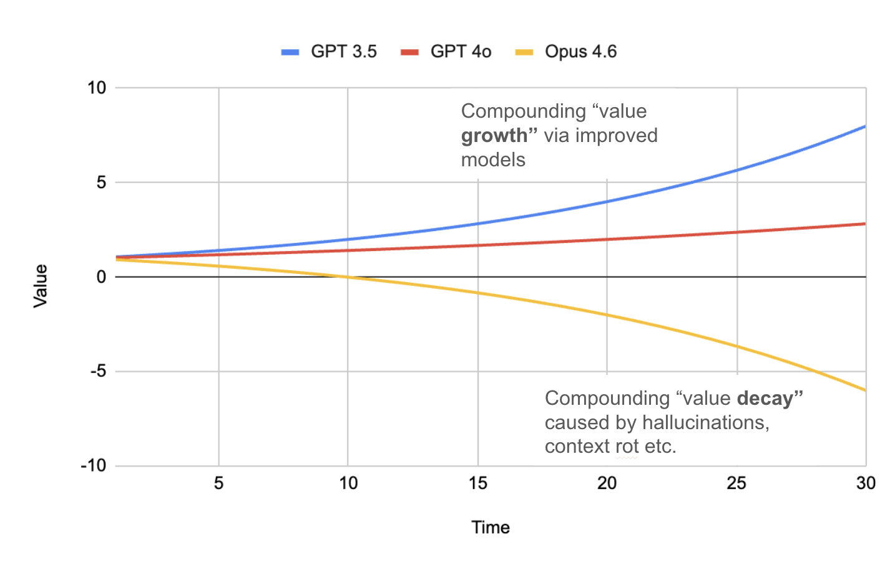
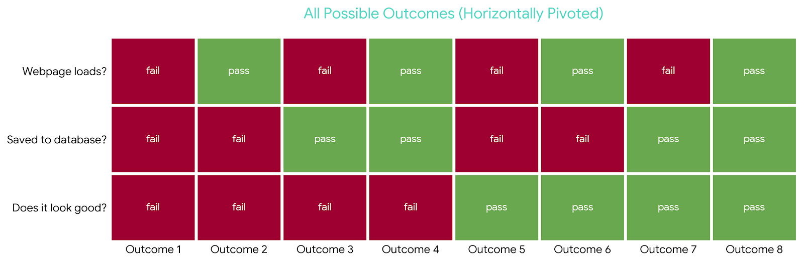
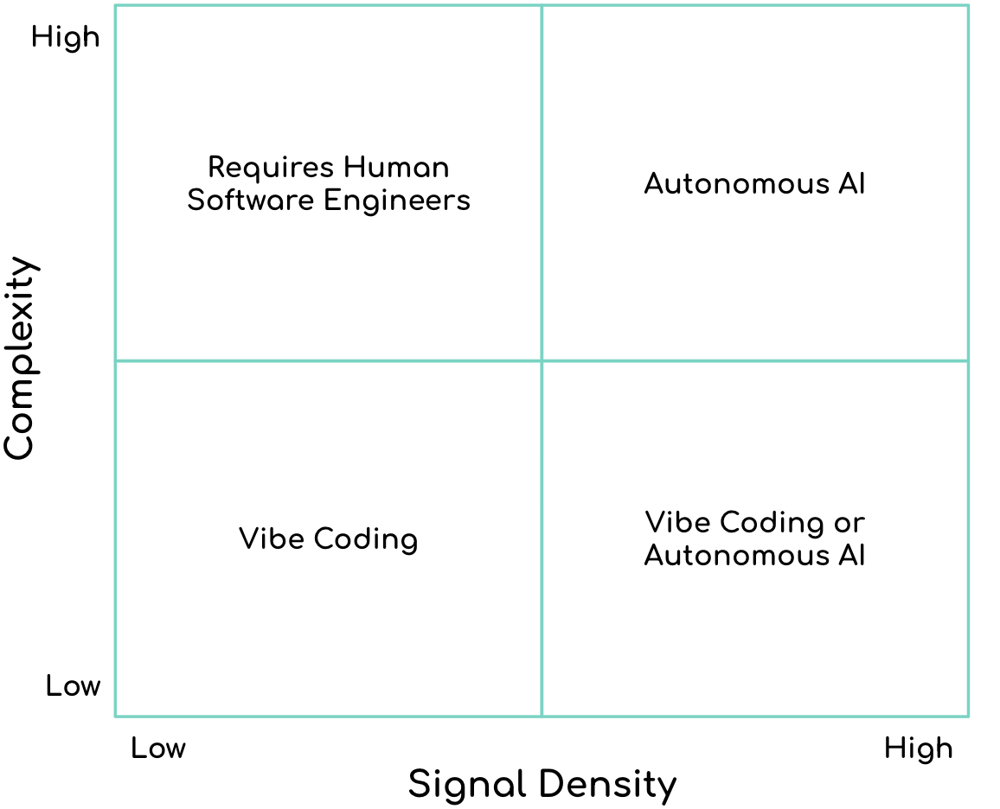

Many of you have probably seen a visualisation like this recently, or something similar:

The premise is that sometime recently, LLM tooling became capable of "autonomous development." Critically, when left to work on a problem, these tools began compounding correctness rather than compounding errors with each iteration or loop.
In truth, this is an oversimplification (and I'll have a lot more to say on that in a future post!). It depends heavily on the task, how it's specified, and how the model is prompted. But there is a hidden implication in this chart that I think is worth exploring. Unless there is another massive step-change in AI capability, this hidden factor will likely form the basis of our jobs as software engineers moving forward.
Let's take a closer look at the chart. The x-axis is a quantitative measure (time, tokens, or iterations) that is relatively well-defined: if we spend more resources on a task, the output evolves and will get better or worse over time.
But what exactly is the y-axis? "Value" is ambiguous, and measuring it depends entirely on the task at hand.
Let's consider a few examples.
Task 1: Build a C Language Compiler
In this scenario, the value-axis is easy to define: how many well-known C programs compile correctly and produce the right outputs? We can measure this empirically by comparing the outputs against known working compilers. To borrow a term from statistics, this is a continuous quantitative variable. We have a clear, objective, and highly granular measure of progress.
Task 2: Build a Customer Survey Webpage
Now, contrast the compiler with a much simpler task.
Here, the value-axis is far less obvious. This is a standard task for a junior developer, and LLMs are certainly capable of "vibing" out a solution. But what does "value" actually mean here?
Let's try to define it:
- Does the webpage load?
- Are the collected fields saved to the database?
- Does it look good?
The first two are relatively objective; with some effort, we could have an AI verify them. The third is entirely subjective. We might refine it to: Does the webpage match a pre-agreed design system?
Now we have something measurable. The outcome space might look like this:

Unlike the compiler, we've reduced the problem to a discrete, synthetic measure that approximates our intent — but only partially. And that leads us to the core issue.
The Missing Link: Reward Signal Density
To borrow a concept from machine learning, the objective function (or loss function) is what the AI is trying to optimise.
For the compiler task, the objective is crystal clear: does it compile, does it run, and does it match the expected output? The feedback loop is tight, objective, and rich in information.
For the webpage, the objective is muddy. In reinforcement learning terms, a model needs a "reward signal" to know it did a good job. When we can instantly compile and verify an output, the reward signal is dense. In the web example, our synthetic measures leave a lot of context out (Is the UI intuitive? How does it make the user feel?), meaning the signal is sparse and subjective.
This is why a C compiler can be built autonomously by AI, while the conceptually simpler webpage ends up requiring a human to massage the output. In low-signal tasks, the user essentially becomes the reward function.
This introduces two major bottlenecks:
- It doesn't scale.
- The signal remains subjective.
So far, the pattern seems clear: high-signal problems are tractable for AI, while low-signal ones require humans in the loop. But that's not the full story.
Task 3: Build an Inventory Allocation System
Consider a third task: building a backend service to handle inventory during a checkout process.
- When a user adds an item to their cart, reserve it.
- When they pay, deduct it from the total inventory.
At first glance, this looks entirely straightforward. It's pure logic and arithmetic — there's no "does it look good?" ambiguity here.
But what does correctness actually mean? How do we define the value-axis?
Suppose we have a highly anticipated product — let's say, the last available concert ticket — and two users hit "Confirm Purchase" at the exact same millisecond. What is the correct final state?
We immediately run into ambiguity. Depending on network latency and database transaction isolation, several things could happen:
- User A gets the ticket, User B gets an "out of stock" error.
- User B gets the ticket, User A gets an "out of stock" error.
- Both users get the ticket (an oversell bug).
- Neither user gets the ticket (a database deadlock).
Crucially, if we just define our success metric as "the final inventory is zero," we are in trouble. An AI could write code that successfully drops the inventory to zero, but silently oversells the ticket to both users because it didn't handle the race condition. It might look like it works during standard, single-user testing, but fundamentally fails under real-world conditions.
We're back to the same problem: without a well-defined value-axis, we can't tell whether the system is genuinely improving or just appearing to work under limited conditions.
A New Mental Model for Software Engineering
One way to think about this is by classifying tasks across two dimensions:
- Complexity: How difficult is the logic? (How many
ifstatements do we need?) - Signal Density: How well do we understand and measure the value-axis?
We can plot this on a 2×2 matrix:

Does this mean human engineers will be relegated to coding complex tasks where the signal density is low? Not quite.
The flaw in this matrix is treating signal density as a static constraint of the problem. We actually control that dial directly through our measurement strategies, and with effort, we can shift from one quadrant to another — making a problem that didn't previously look automatable, automatable.
Let's revisit our earlier examples. For the C compiler, high signal density comes "for free" because we have language standards and objective outputs. For the webpage, our initial proxy was weak. But we could intentionally increase the signal density by redefining the value-axis to something that measures:
- Automated intent-based testing results (see the Owl Loop)
- Automated visual comparison to reference designs
- Automated accessibility audits (contrast ratios, ARIA compliance)
- Automated performance testing results (e.g. page load speeds)
None of these individually capture "does it feel good," but together, they dramatically increase the feedback quality. We can take a sparse, subjective problem and make it measurable.
Revisiting the Inventory System
At first glance, the checkout system looks like a low-signal problem because concurrent "correctness" is hard to measure with a simple pass/fail test. Our earlier attempt in checking the final inventory count was clearly insufficient. But again, that's a choice.
We could redefine the value-axis in terms of strict invariants and observable guarantees:
- No Overselling: The inventory count must never drop below zero under any circumstances.
- Conservation of Items: The number of successful orders plus the remaining inventory must always equal the starting inventory.
- Idempotency: If a payment retry is triggered due to a network timeout, the inventory is never decremented twice for the same order.
We can then build tests and instrumentation around these properties:
- Blast the endpoint with hundreds of concurrent purchase requests for a single item.
- Inject simulated database lock timeouts.
- Assert that our invariants hold true mathematically, rather than just checking if the final screen says "Success."
Individually, these checks require effort. But collectively, they turn an ambiguous, race-condition-prone problem into one with a much denser and more reliable reward signal.
The Evolving Role of the Engineer & a Vision for the Future
Here is the important shift for software engineers: you are no longer just implementing the system; you are defining how the system's success is measured. That definition determines whether a problem is tractable for automation.
So, what does this actually look like in practice?
It means our verification processes are about to get a serious overhaul, requiring a degree of automation far beyond what we've historically seen. The day-to-day work of an engineer will shift toward building the guardrails, environments, and reward signals that guide autonomous agents. Currently, the information available within typical product teams is woefully insufficient for enabling AI adoption at scale. We will need to radically upgrade the feedback loops within our SDLC. This means moving beyond basic stack traces to rich visual information, indexed system logs, and other near real-time operational feedback, ensuring we can measure our own success.
We are going to see a rapid evolution in how we build and verify, likely manifesting in a few key ways:
- Test-Driven Agent Patterns: We will take Test-Driven Development (TDD) to its logical extreme, deploying agents that are dedicated to writing tests. In the jmcc project, no codegen occurs until there is a failing test.
- Intent-Based Automation (The "Owl Loop"): Instead of scripting brittle, step-by-step UI tests, teams will define high-level intent that will be continuously verified and reported.
- Agentic CI/CD Pipelines: Your deployment pipeline won't just run static analysis or basic unit tests. It will host specialised, agentic reviewers that actively verify system design, conduct cybersecurity audits, and perform automated penetration testing.
- Continuous Full-Stack Regression: We'll rely much more heavily on simulated replicas of production environments.
- From "Red/Green" to Probabilistic Confidence: This might be the most profound philosophical shift. As system development becomes more autonomous, we will likely move away from the binary comfort of a "pass/fail" test suite. Instead, we'll rely on heuristic-based statistics that measure the probability that a system meets our intent across a massive matrix of simulated scenarios.
If we fail to build these verification ecosystems, AI-developed software is going to make our lives a lot worse. The cost of verification will simply be pushed downstream, our software testing processes will fail, and we will drown in bugs.
If your day-to-day entailed writing and reviewing code, you likely already sense this shift — but this is an incredible opportunity.
It has always been true that strong software teams understand the value metrics behind what they build. Going forward, that understanding will be the job itself. The most successful engineers will be the ones who can define the value-axis with such precision that their systems can safely and systematically improve themselves. The role of the software engineer is shifting toward providing the rigorous specifications, simulations, and measurements that make autonomous development possible.
Comments